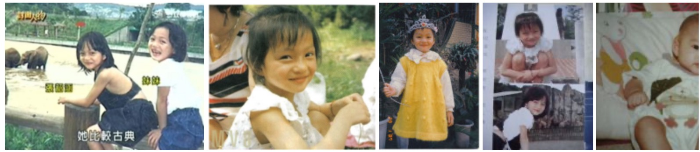
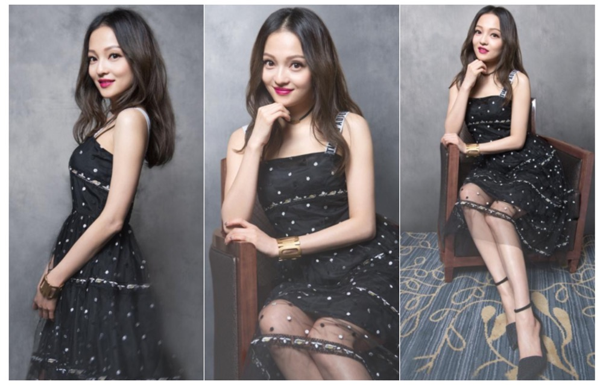
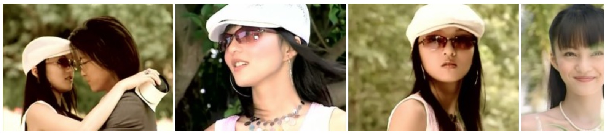
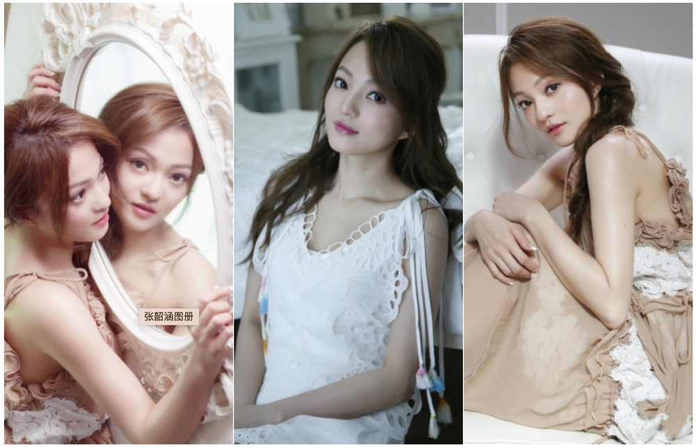

张韶涵（Angela Zhang），1982年1月19日出生于中国台湾省桃园市中坜区，拥有四分之一维吾尔族血统， 华语流行乐女歌手、影视演员，毕业于加拿大温斯顿爵士邱吉尔中等学校。
张韶涵出生于台湾省桃园县中坜市。她从小就爱唱歌，但却五音不全，后来因为台湾流行唱KTV，她便每个礼拜都去唱两三 次，就这样把好嗓子给“开发”出来了。张韶涵的母亲是合唱团成员，经常边弹钢琴边唱歌给她听，这对她的影响很深，让她 对歌手有了一种憧憬 。小学四年级时，她随家人一度移民新加坡，因为水土不服，在新加坡念几个月后，又回中坜市继续读书。此外，她从 小还很独立，什么事情都是她自己做。小学五年级的时候，她就在母亲开的“黑胡子牛排馆”里打工了，端菜、收盘子、洗 碗等活她都要做；而后，爷爷将土地变卖，资助他们全家移民加拿大 [23] 。
小学六年级时就随家人到加拿大定居生活，她家房子的油漆都是她自己刷的。她高中就读于加拿大温斯顿爵士邱吉尔中等学 校。由于父亲生意失败，后又因心脏病不能正常工作，身为家中长女的她在15岁时就担起了养家的重担，洗车、送便当等都 工作她都做过；与此同时，她的父母想让她学唱歌，于是父亲开始卖家中值钱的东西支持她去学；而后，她陆续参加了很多 歌唱比赛，并与妹妹张韶轩经常联手参赛；期间，她总是一个人跑去海边练习歌唱技巧，把大海当成她的听众，而这一举动 则常常引起一旁的外国游客好奇侧目。由于参加比赛得奖可以拿到奖品，张韶涵家里很多电器都是她靠比赛拿回家的。
17岁，她参加了“中广流行之星”歌唱比赛，获得加拿大赛区第一名，并受邀前往台湾参加总决赛，在总决赛上被评委 林隆璇相中，并与之签约；由于学业的关系，张韶涵与林隆璇签约后，又回到加拿大继续读了两年书，期间一直在接受当歌手 的专业培训；此外，因为长达两三年都没收入，她还到服装店上班补贴生活费。
2001年，张韶涵回到中国台湾发展事业，与福茂唱片签约，成为旗下签约艺人；同年，与颜行书、孙协志领衔主演青春爱情偶像 剧《永不言弃》（又名《MVP情人》），在剧中饰演精研篮球战术却不会打篮球的女主角田羽希，这是她的首部电视剧作品，从而 正式进入演艺圈。
2003年，与许绍洋、霍建华合作主演爱情励志偶像剧《海豚湾恋人》，在剧中饰演拥有过人天赋、梦想成为歌手的女主角易天边， 并为该剧演唱了插曲《Journey》及片尾曲《遗失的美好》；同年，完成了个人的主持处女秀，担任了三立都会台行脚类旅游类节 目《中国那么大》的外景主持人。
2021年1月1日，参加《2021新年音乐会——扬帆远航大湾区》并与平安带来《乘风破浪》，共传达逐梦者们乘风破浪的决心与勇气； 1月9日，参与录制的文化音乐节目《经典咏流传第四季》在中央电视台综合频道播出，化身“嫦娥”唱响《但愿人长久》，歌咏中国 探月工程背后一代又一代人对登月梦想的接力传承；1月15日，作为音乐合伙人再次加盟浙江卫视音乐节目《天赐的声音第二季》； 2月4日，参加《中央广播电视总台2021网络春晚》，演绎《淋雨一直走》和《欧若拉》；2月11日，参加《2021年中央广 播电视总台春节联欢晚会》，与成龙、李玟等演唱歌曲《明天会更好》 [147] ；2月14日，为电视剧《斗罗大陆》演唱的小舞人物 曲《绝恋》上线；2月26日，参加山东卫视元宵晚会，并带来歌曲《淋雨一直走》。
张韶涵的父亲叫做张志宏，母亲叫做姜柔伊（姜文鹊），外婆叫做彭娇妹，舅舅叫做姜礼乐。张韶涵在家排行老大，分别有一个弟弟和妹 妹，弟弟叫做张柏御，妹妹叫做张韶轩。2008年，张韶涵因家族遗传性心脏病，返回加拿大治疗及休息了两个月；同年，张韶涵的父母离婚。
2013年1月，在网络上推出自创女鞋品牌“Temptation”，这是她首次跨界设计女鞋；8月19日，其投资千万元的实体店面在台湾省台北市 东区开张，并上架了300多种鞋款；12月10日，个人音乐品牌“天涵音乐”成立，并亲自担任CEO。
